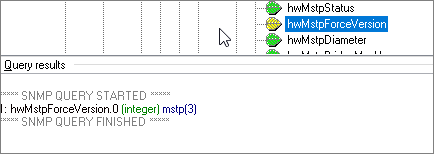
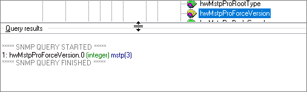

hwMstpForceVersion describes the STP type. It describes the STP type in process 0 when there are multiple processes. The value 0 indicates STP, the value 2 indicates RSTP, and the value 3 indicates MSTP.
Object |
OID |
|---|---|
hwMstpForceVersion |
1.3.6.1.4.1.2011.5.25.42.4.1.2 |
hwMstpProForceVersion |
1.3.6.1.4.1.2011.5.25.42.4.1.23.1.7 |

